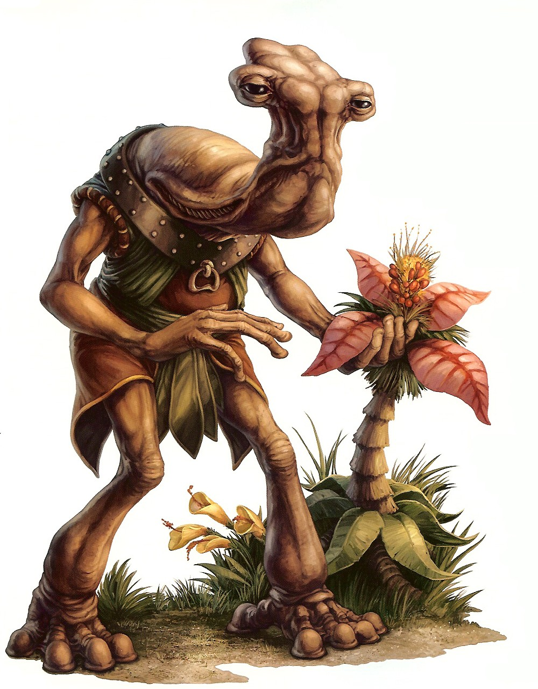

Ithorian
ithorian
Special Abilities: Ithorians begin the game with one rank in Survival. They still may not train Survival above rank 2 during character creation.
Ithorian Bellow: With two mouths and four throats, Ithorians have a unique natural weapon they can call upon when threatened (Resilience; Damage 6; Critical 4; Range [Short]; Blast 3, Concussive 1, Slow-Firing 2, Stun Damage). Each time they use this ability, they suffer 3 strain.
In Basic, Ithorians are called Hammerheads (though the nickname is not to their liking), as they possess one of the most unique head structures of any known biped. Ithorians are often considered the caretakers of the galaxy, so profound is their love of natural environments of all kinds and their desire to repair the damage sentient beings do to their worlds.
Ithorians have long, spindly bodies (ranging from 1.8 to 2.3 meters in height) and long fingers. At the top of an Ithorian's torso, the neck and head emerge as a continuous, curved structure that reaches forward and ends with a vaguely "T"-shaped protrusion. The Ithorian's eyes are large, inset orbs on either end of the structure's "T." Back near where the neck emerges from the torso, there is a mouth on either side. With four throats and these two mouths, Ithorians have the capacity to speak and sing in stereo. They possess powerful sonic abilities that can, with effort, be used offensively.
Males and females are primarily distinguished by the humps on the backs of their heads; one for a male, two for a female. Their young, called "pupae," are spawned by the thousands from a single male. At this early stage, Ithorians have no limbs, moving around by use of locomotion tubes. All of this changes after their metamorphosis into young adults.
Ithorian society is one based on a spiritual connection to "Mother Jungle," which is how they refer to the spirit of their lush, rainforest-covered planet of Ithor. The entire civilization is dedicated to never desecrating the planet; as soon as they had access to repulsorlift technology, the Ithorians built giant floating communities—called herdships—that allow them to float above and travel across their planet while minimizing their impact on its pristine beauty.
Ithorians have carried this collective mentality with them out into the stars, adapting their herdship concept to interstellar travel. Each such herd, as they refer to their social groupings and extended families, is led by a Force-sensitive priest. This makes them anathema to Emperor Palpatine and his Empire. The only reason the planet has remained relatively untouched is due to the Empire's extortion of agricultural technology and other secrets from the Ithorians in return for abstaining from destroying the planetary surface.
Ithorians are even more pacifistic than Gran, as a general rule; they intentionally weed out aggressive members of their species by exiling them from Ithor (which is why many people have their first encounter with atypically violent or ill-tempered Ithorians). Usually eschewing weapons, an Ithorian typically defends himself with his sonic bellow abilities. Ithorians out among the stars seek roles as artists, traders, and environmentalists. In this latter role, many Ithorians have acted to help restore ecological devastation done to other planets, usually as the result of one war or another.
Ithor is considered one of the most beautiful and life-filled worlds in the galaxy. It is covered in crystal blue oceans and emerald rainforests. All traces of civilization have been systematically removed from the planet's surface by the Ithorians, who live above it in their city-sized herdships. Individuals who choose to go to the surface are expected to reside there forever after, heeding the call of "Mother Jungle."
Considered one of the most complex and beautiful languages in the galaxy, Ithorese is a stereophonic melange of sounds that is a wonder to hear. Mastery of it by non-lthorians is considered an incredible talent, as it is exceptionally difficult to manage without the unique qualities of Ithorian biology.
Much as with Gran, Ithorians are incredibly rare to find in the actual ranks of the Rebellion. Most Ithorians sympathize with the Alliance, yet their focus on life and the repairing of damage from violence makes them ill-suited for combat. Nonetheless, there are a handful of Ithorians who choose to fight a force willing to cause untold destruction to their world and so many others, believing this is how they can best serve "Mother Jungle." The Medic specialization of the Soldier career is a natural fit for an Ithorian, and the Diplomat career path is a good fit for one as well. Some Ithorians also find a role with the Scientist specialization of the Engineer career. The natural connection the species has to the Force makes the Force- Sensitive Emergent specialization an interesting choice as well. Unsurprisingly, the Personnel Duty is the most likely one for most Ithorians, though Resource Acquisition is also a worthy goal.